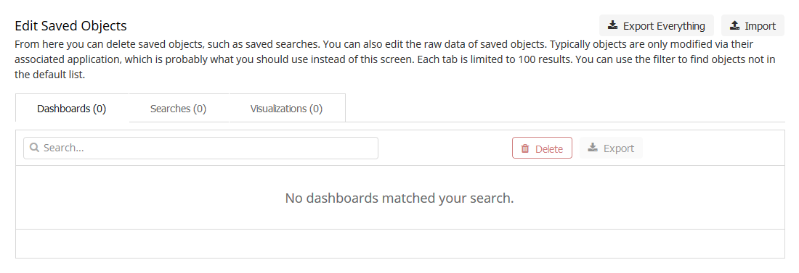
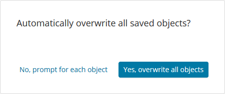

Elasticsearch and Kibana
To set up visual dashboards of DMARC data, install Elasticsearch and Kibana.
Note
Elasticsearch and Kibana 8 or later are required (parsedmarc’s 8.x Python
client also supports Elasticsearch 9). OpenSearch users must use the
[opensearch] configuration section instead — the Elasticsearch 8.x client
refuses to connect to non-Elasticsearch clusters.
Installation
On Debian/Ubuntu based systems, run:
sudo apt-get install -y apt-transport-https
wget -qO - https://artifacts.elastic.co/GPG-KEY-elasticsearch | sudo gpg --dearmor -o /usr/share/keyrings/elasticsearch-keyring.gpg
echo "deb [signed-by=/usr/share/keyrings/elasticsearch-keyring.gpg] https://artifacts.elastic.co/packages/8.x/apt stable main" | sudo tee /etc/apt/sources.list.d/elastic-8.x.list
sudo apt-get update
sudo apt-get install -y elasticsearch kibana
For CentOS, RHEL, and other RPM systems, follow the Elastic RPM guides for Elasticsearch and Kibana.
Note
Previously, the default JVM heap size for Elasticsearch was very small (1g),
which will cause it to crash under a heavy load. To fix this, increase the
minimum and maximum JVM heap sizes in /etc/elasticsearch/jvm.options to
more reasonable levels, depending on your server’s resources.
Make sure the system has at least 2 GB more RAM than the assigned JVM heap size.
Always set the minimum and maximum JVM heap sizes to the same value.
For example, to set a 4 GB heap size, set
-Xms4g
-Xmx4g
See https://www.elastic.co/guide/en/elasticsearch/reference/current/important-settings.html#heap-size-settings for more information.
sudo systemctl daemon-reload
sudo systemctl enable elasticsearch.service
sudo systemctl enable kibana.service
sudo systemctl start elasticsearch.service
sudo systemctl start kibana.service
As of Elasticsearch 8.7, activate secure mode (xpack.security.*.ssl)
sudo vim /etc/elasticsearch/elasticsearch.yml
Add the following configuration
# Enable security features
xpack.security.enabled: true
xpack.security.enrollment.enabled: true
# Enable encryption for HTTP API client connections, such as Kibana, Logstash, and Agents
xpack.security.http.ssl:
enabled: true
keystore.path: certs/http.p12
# Enable encryption and mutual authentication between cluster nodes
xpack.security.transport.ssl:
enabled: true
verification_mode: certificate
keystore.path: certs/transport.p12
truststore.path: certs/transport.p12
sudo systemctl restart elasticsearch
To create a self-signed certificate, run:
openssl req -x509 -nodes -days 365 -newkey rsa:4096 -keyout kibana.key -out kibana.crt
Or, to create a Certificate Signing Request (CSR) for a CA, run:
openssl req -newkey rsa:4096-nodes -keyout kibana.key -out kibana.csr
Fill in the prompts. Watch out for Common Name (e.g. server FQDN or YOUR domain name), which is the IP address or domain name that you will use to access Kibana. it is the most important field.
If you generated a CSR, remove the CSR after you have your certs
rm -f kibana.csr
Move the keys into place and secure them:
sudo mv kibana.* /etc/kibana
sudo chmod 660 /etc/kibana/kibana.key
Activate the HTTPS server in Kibana
sudo vim /etc/kibana/kibana.yml
Add the following configuration
server.host: "SERVER_IP"
server.publicBaseUrl: "https://SERVER_IP"
server.ssl.enabled: true
server.ssl.certificate: /etc/kibana/kibana.crt
server.ssl.key: /etc/kibana/kibana.key
Note
For more security, you can configure Kibana to use a local network connection to elasticsearch :
elasticsearch.hosts: ['https://SERVER_IP:9200']
=>
elasticsearch.hosts: ['https://127.0.0.1:9200']
sudo systemctl restart kibana
Enroll Kibana in Elasticsearch
sudo /usr/share/elasticsearch/bin/elasticsearch-create-enrollment-token -s kibana
Then access to your web server at https://SERVER_IP:5601, accept the self-signed
certificate and paste the token in the “Enrollment token” field.
sudo /usr/share/kibana/bin/kibana-verification-code
Then put the verification code to your web browser.
End Kibana configuration
sudo /usr/share/elasticsearch/bin/elasticsearch-setup-passwords interactive
sudo /usr/share/kibana/bin/kibana-encryption-keys generate
sudo vim /etc/kibana/kibana.yml
Add previously generated encryption keys
xpack.encryptedSavedObjects.encryptionKey: xxxx...xxxx
xpack.reporting.encryptionKey: xxxx...xxxx
xpack.security.encryptionKey: xxxx...xxxx
sudo systemctl restart kibana
sudo systemctl restart elasticsearch
Now that Elasticsearch is up and running, use parsedmarc to send data to
it.
Download (right-click the link and click save as) export.ndjson.
Connect to kibana using the “elastic” user and the password you previously provide on the console (“End Kibana configuration” part).
Import export.ndjson the Saved Objects tab of the Stack management
page of Kibana. (Hamburger menu -> “Management” -> “Stack Management” ->
“Kibana” -> “Saved Objects”)
It will give you the option to overwrite existing saved dashboards or visualizations, which could be used to restore them if you or someone else breaks them, as there are no permissions/access controls in Kibana without the commercial X-Pack.
{kind=link}

{kind=link}

Upgrading Kibana index patterns
parsedmarc 5.0.0 makes some changes to the way data is indexed in
Elasticsearch. if you are upgrading from a previous release of
parsedmarc, you need to complete the following steps to replace the
Kibana index patterns with versions that match the upgraded indexes:
Login in to Kibana, and click on Management
Under Kibana, click on Saved Objects
Check the checkboxes for the
dmarc_aggregateanddmarc_failureindex patternsClick Delete
Click Delete on the conformation message
Download (right-click the link and click save as) the latest version of export.ndjson
Import
export.ndjsonby clicking Import from the Kibana Saved Objects page
Backfilling the combined DKIM/SPF result fields
As of the version fixing #169,
aggregate documents include dkim_results_combined and spf_results_combined —
scalar string arrays that keep each auth result’s selector/scope, domain, and
result paired, which the dashboards’ alignment-detail tables aggregate on.
Reports saved by older versions lack these fields and will not appear in
those tables.
parsedmarc now backfills this automatically. On startup, it runs a cheap
count query against each configured aggregate index pattern to check for
documents that have DKIM or SPF results but are missing the corresponding
combined field. If any are found, it submits the backfill as a background
_update_by_query task (wait_for_completion=false), so startup is never
blocked on it; progress is logged, including the task ID. The check itself
is idempotent — once an index is fully backfilled, later startups see a
count of 0 and log nothing further — and it works the same way on
OpenSearch. Any error talking to the cluster (for example, no indexes yet
on a fresh install) is logged as a warning and retried on the next startup,
rather than aborting parsedmarc.
Which index patterns it targets follows the ones parsedmarc writes to, and is logged at debug level on startup:
With
index_prefix_domain_mapconfigured in[general]and noindex_prefixset, every tenant prefix in the map gets its own index pattern, alongside the unprefixed one — aggregate and failure reports for a domain that is not in the map are still saved without a prefix. A configuration reload (SIGHUP) re-reads the map, so a newly onboarded tenant is covered without a restart.With an
index_prefixset in[elasticsearch]/[opensearch], only that prefix is targeted, and the map is not consulted. That is deliberate: such a deployment writes only under its own prefix, and an_update_by_queryagainst a pattern it does not write to could reach another deployment’s data on a shared cluster.With an
index_suffixset, both the suffixed and the unsuffixed pattern are targeted, so documents indexed before the suffix was configured are backfilled too. Note that the unsuffixed pattern also matches any other suffix on the same cluster.
If you upgrade the dashboards without pointing the new parsedmarc version
at the cluster, or you’d rather control when the write load happens, you
can still run the backfill manually. It is idempotent (documents that
already have the fields are skipped), so it is safe to re-run. It works
identically on OpenSearch; just adjust the URL and credentials. The query
matches only documents that have at least one DKIM or SPF auth result and
lack the corresponding combined field; documents with no auth results are
skipped, because an exists query cannot see an empty array, and for
search purposes an empty dkim_results_combined is identical to an
absent one. Each result is matched on either its domain or its result
subfield as defense in depth: an empty string indexes no text tokens and
is invisible to exists, and the storage shape of every historical
parsedmarc version can’t be audited, so matching either subfield ensures
no backfillable document is skipped.
curl -X POST "http://localhost:9200/dmarc_aggregate*/_update_by_query?conflicts=proceed&wait_for_completion=false" \
-H "Content-Type: application/json" -d '
{
"query": {
"bool": {
"minimum_should_match": 1,
"should": [
{
"bool": {
"must": [
{
"bool": {
"minimum_should_match": 1,
"should": [
{"exists": {"field": "dkim_results.domain"}},
{"exists": {"field": "dkim_results.result"}}
]
}
}
],
"must_not": [{"exists": {"field": "dkim_results_combined"}}]
}
},
{
"bool": {
"must": [
{
"bool": {
"minimum_should_match": 1,
"should": [
{"exists": {"field": "spf_results.domain"}},
{"exists": {"field": "spf_results.result"}}
]
}
}
],
"must_not": [{"exists": {"field": "spf_results_combined"}}]
}
}
]
}
},
"script": {
"lang": "painless",
"source": "List dk = new ArrayList(); def dr = ctx._source.dkim_results; if (dr != null) { if (!(dr instanceof List)) { dr = [dr]; } for (e in dr) { if (e == null) { continue; } def sel = e.selector != null ? e.selector : \"none\"; def dom = e.domain != null ? e.domain : \"none\"; def res = e.result != null ? e.result : \"none\"; dk.add(sel + \" / \" + dom + \" / \" + res); } } ctx._source.dkim_results_combined = dk; List sp = new ArrayList(); def sr = ctx._source.spf_results; if (sr != null) { if (!(sr instanceof List)) { sr = [sr]; } for (e in sr) { if (e == null) { continue; } def sc = e.scope != null ? e.scope : \"mfrom\"; def dom = e.domain != null ? e.domain : \"none\"; def res = e.result != null ? e.result : (e.results != null ? e.results : \"none\"); sp.add(sc + \" / \" + dom + \" / \" + res); } } ctx._source.spf_results_combined = sp;"
}
}'
wait_for_completion=false returns a task ID — check progress with
GET _tasks/<task id>. Adjust the index pattern if you use a custom
index_prefix/index_suffix; with index_prefix_domain_map, run the
command once per tenant prefix (acme_corp_dmarc_aggregate*) plus once for
the unprefixed pattern, or widen it to *dmarc_aggregate* to cover every
tenant in one pass. After backfilling, re-import the updated
dashboards ndjson (the index pattern saved object changed too) per the
import instructions above.
SMTP TLS documents have the same class of defect one level deeper:
policies is an object array, and each policy’s failure_details is an
object array inside it. SMTP TLS documents now also carry
policies_combined and failure_details_combined, backfilled
automatically at startup the same way, and the equivalent manual command
is:
curl -X POST "http://localhost:9200/smtp_tls*/_update_by_query?conflicts=proceed&wait_for_completion=false" \
-H "Content-Type: application/json" -d '
{
"query": {
"bool": {
"minimum_should_match": 1,
"should": [
{
"bool": {
"must": [
{
"bool": {
"minimum_should_match": 1,
"should": [
{"exists": {"field": "policies.policy_domain"}},
{"exists": {"field": "policies.policy_type"}}
]
}
}
],
"must_not": [{"exists": {"field": "policies_combined"}}]
}
},
{
"bool": {
"must": [
{
"bool": {
"minimum_should_match": 1,
"should": [
{"exists": {"field": "policies.failure_details.result_type"}},
{"exists": {"field": "policies.failure_details.sending_mta_ip"}}
]
}
}
],
"must_not": [{"exists": {"field": "failure_details_combined"}}]
}
}
]
}
},
"script": {
"lang": "painless",
"source": "List pols = new ArrayList(); List dets = new ArrayList(); def ps = ctx._source.policies; if (ps != null) { if (!(ps instanceof List)) { ps = [ps]; } for (p in ps) { if (p == null) { continue; } def dom = p.policy_domain != null ? p.policy_domain : \"none\"; def typ = p.policy_type != null ? p.policy_type : \"none\"; pols.add(dom + \" / \" + typ); def fds = p.failure_details; if (fds != null) { if (!(fds instanceof List)) { fds = [fds]; } for (f in fds) { if (f == null) { continue; } def rt = f.result_type != null ? f.result_type : \"none\"; def smi = f.sending_mta_ip != null ? f.sending_mta_ip : \"none\"; def ri = f.receiving_ip != null ? f.receiving_ip : \"none\"; def rmh = f.receiving_mx_hostname != null ? f.receiving_mx_hostname : \"none\"; dets.add(dom + \" / \" + typ + \" / \" + rt + \" / \" + smi + \" / \" + ri + \" / \" + rmh); } } } } ctx._source.policies_combined = pols; ctx._source.failure_details_combined = dets;"
}
}'
It works identically on OpenSearch; just adjust the URL and credentials, same as the aggregate command above.
Records retention
Starting in version 5.0.0, parsedmarc stores data in a separate
index for each day to make it easy to comply with records
retention regulations such as GDPR. For more information,
check out the Elastic guide to managing time-based indexes efficiently.